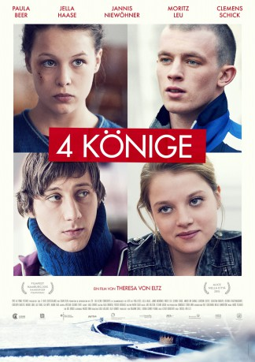

#3585 Vier Könige
Alternativ: 4 Kings (Englischer Titel)
 
 IMDB-Wertung: 6.9 / 10
IMDB-Wertung: 6.9 / 10  Metascore: 0
Metascore: 0 
Weihnachten – Zeit der Hoffnung, der Sehnsucht, der Erwartungen und der Familien. In vier Familien eskalieren kurz vor Weihnachten die Konflikte und vier sehr unterschiedliche Jugendliche verbringen daraufhin die Weihnachtstage in der Jugendpsychiatrie. Konfrontiert mit sich selbst, miteinander und mit einem unkonventionellen Psychiater erleben sie ein Weihnachten, das sie nie vergessen werden.
WEBHDRIP
Jahr: 2015
Dauer: 98 Minuten
FSK: 12
Land: Deutschland Studio: Port au Prince Film & Kultur ProduktionTonspuren:
Untertitel:
Auflösung: 1080p (1920x804) Größe: 3450 MB
Genre: Drama, Weihnachten
Regisseur: Theresa von Eltz
Drehbuch: Peter Mullan
Soundtrack:
Darsteller:
 Jella Haase als Lara
Jella Haase als Lara Clemens Schick als Dr. Wolff
Clemens Schick als Dr. Wolff Anneke Kim Sarnau als Schwester Simone
Anneke Kim Sarnau als Schwester Simone- Paula Beer als Alex
 Jannis Niewöhner als Timo
Jannis Niewöhner als Timo- Moritz Leu als Fedja
- Christoph Bantzer als Vater Lara
- Andrea Gerhard als Schwester
- Nadine Hahl als Sporttherapeutin Sandra
- Kai Hoppe als Pfleger Samson
- Markus John als Vater Timo
- Yamen Masoud als Junge
- Sebastian Rudolph als Vater Alex
- Stephan Schad als Chefarzt
- Catherine Seifert als Mutter Alex
- Victoria Trauttmansdorff als Mutter Lara
- Lale Yavas als Sibel
Datei: X:\2015(N-Z)\Vier Könige (2015, FSK12, 1920x804).mkv seit 07.05.2016
Festplatte: HD 2015(A-Z)
 Es gibt insgesamt 161 Filme in der Gruppe '2015(N-Z)'
Es gibt insgesamt 161 Filme in der Gruppe '2015(N-Z)'